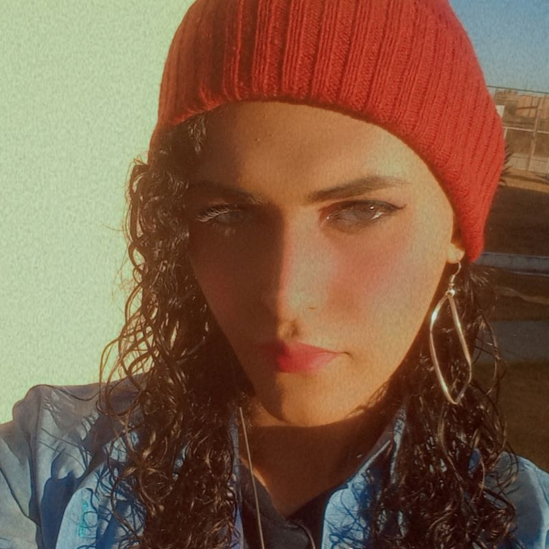

Quem sou eu

Sou uma eterna estudante e praticante das tecnologias front-end. Sou dedicada e me apaixonei pela área quando descobri a possibilidade de alcançar liberdade geográfica, o que me abre portas ainda maiores para oportunidades de trabalho. Assim, continuo me aperfeiçoando . A minha criatividade, aliada a uma curiosidade aguçada, me mantém em movimento rumo a novos conhecimentos e inovações tecnológicas.
>Habilidades
Neste portfólio foram utilizados conhecimentos em HTML5, CSS3 e uma pitadinha de JavaScript. Aqui, continuarei acrescentando todos os meus novos aprendizados e habilidades.
Rede Sociais
minhas rede sociais para contato